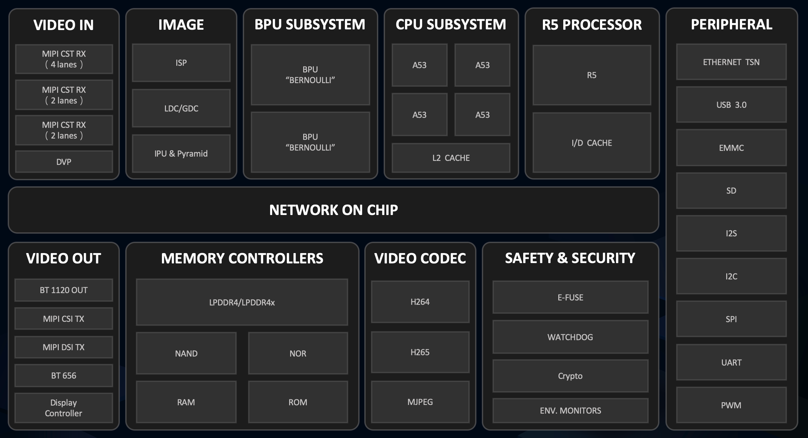

旭日X3芯片概述¶
旭日Sunrise3（简称 X3）是2020年推出的低功耗、高性能AI处理器，主要面向人工智能物联网AIOT领域。 根据用户场景需求不同，X3进一步划分出X3M和X3E两个版本。
芯片的功能框图如下图所示：
{kind=link}
CPU规格：X3芯片采用的ARM® Cortex®-A53作为主控CPU，L1 Cache大小为32KB, L2 Cache大小为512KB，支持FPU, NEON加速。 典型工作频率为1.2GHz，并支持软件层面进行频率控制。X3M芯片内部4个 CPU Core，X3E芯片中内置了2个CPU Core.
BPU规格：BPU为基于地平线自研伯努利二代架构打造的AI加速IP核，X3芯片内置了2个IP核心。 其中X3M的两个BPU核典型工作频率1.2GHz，X3E的两个BPU核典型工作频率0.6GHz，等效AI算力分别高达5TOPS和3TOPS。
Note
X3内置的2个BPU Core，为了业务层面的模型调度提供了非常灵活的多核调度能力，其中包括：
单帧单核：将单次模型推理手动调度到单个BPU Core上进行推理。从而针对检测+分类等场景，可以将全图检测高优先级模型与一些低优先级模型进行物理隔离。
单帧双核：单次模型推理同时使用两个BPU Core的硬件资源来进行推理，实现 真双核 的执行能力，可以显著地降低单次模型推理的延迟。
在DDR等资源未达到瓶颈的情况下，单帧单核可以保证两个BPU核的调度推理隔离。多线程单帧双核场景可以实现推理FPS的双倍提升。 单帧双核场景下，针对大模型，它可以显著的降低单次模型推理延迟。但是在多线程多帧双核场景，会因为双核调度开销，无法实现FPS的双倍提升。
关于高效的使用双核BPU，你可以参考AI算法工具链接口文档来了解相关技术细节。
视频通路能力：X3芯片提供了视频输入Video In,视频输出Video Out,视频编解码Video CODEC以及图像编解码Image Process等完整视频通路，详细请参考下图
{kind=link}
Video In模块：支持MIPI和DVP两种类型图像Sensor的输入。 其中MIPI Rx分为Rx0，Rx1/3，Rx2，总共支持8条Lane，每个Lane带宽设计支持2Gbps，支持YUV422 8/10bit以及Raw 8，10，12，14几种格式的Sensor输入。
SIF模块：承载了Video In输入的虚拟通道到下游ISP/IPU模块的转发工作，并支持直接通过bypass旁路的功能将Video In数据转发到第三方SOC芯片。
ISP模块：支持LSC/LDC/DIS/DPC/SNR等，可以在宽动态、低照度场景下得到高质量的图像。同时提供ISP Tuning工具支持用户自行进行ISP调试。
VPS硬件：提供了缩放，镜像，旋转，矫正，流控，金字塔等图像处理能力。硬件上由单个IPU，单个金字塔PYM，两个GDC组成。软件上则采用分组来实现分时复用硬件，最大支持8个组的分时复用。
VENC/VDEC模块：提供了最大8M@60fps的H.265编解码，最大8M@30fps的H.264 编解码能力，以及支持最大16Mpixels的JPEG编解码能力。
Video Out模块：支持BT1120，BT656，MIPI等输出场景。
Note
Video In模块除了支持MIPI和DVP两种RAW类型Sensor的输入以外，我们还支持通过USB接口的Sensor输入。 常见场景是通过USB驱动拿到JPEG等格式的USB输入图像，并经过VDEC解码模块进行图像解码，输出YUV格式的数据给到VPS模块。
关于基础视频通路使用和USB Camera的使用，你可以参考系统软件基础API，或通过VideoSource应用开发组件来简化你的使用。
其他关于芯片外设等端口，你可以参考X3M/X3E芯片Datasheet手册。